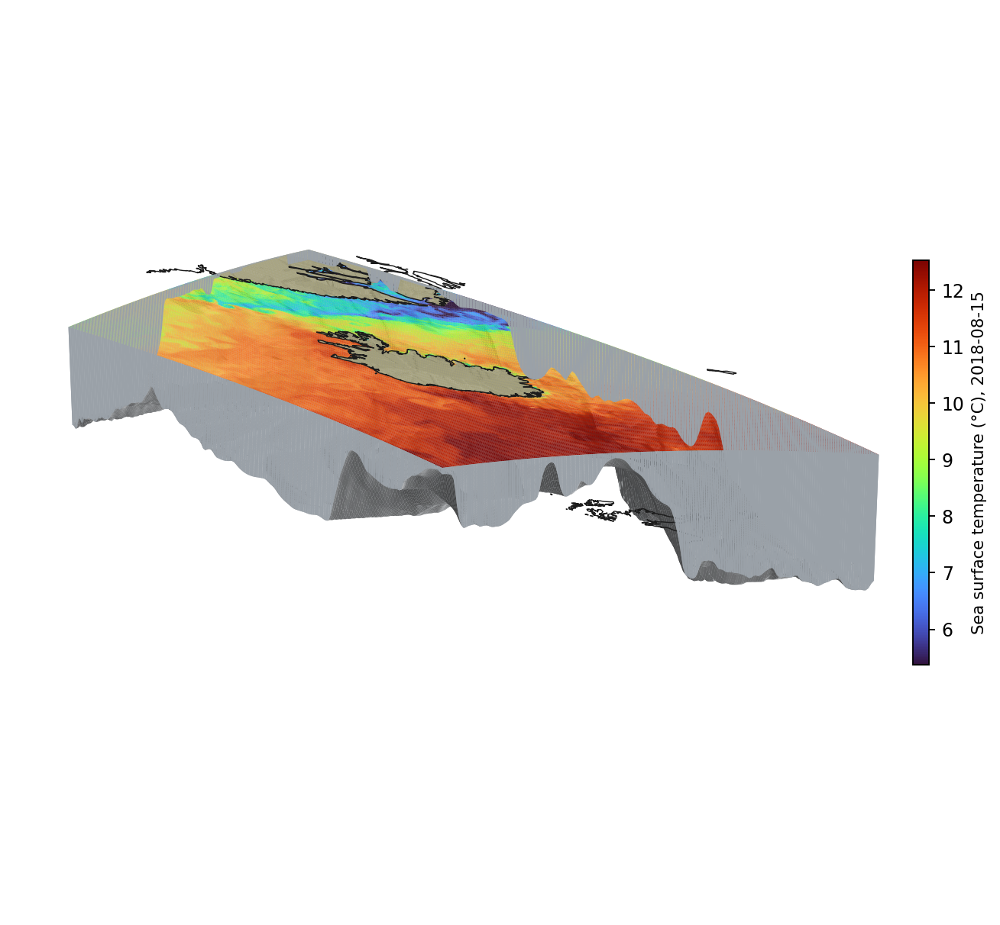

ROMS Modeling
A 2 km-resolution ROMS (Regional Ocean Modeling System) implementation of the seas around Iceland — the Iceland Sea, Denmark Strait and the Irminger Sea shelf — developed for physical oceanographic research and fisheries applications, with ongoing validation against independent observations.
Explore
 Ready
Ready
About the Model
Domain, resolution, bathymetry and the institution behind the model.
ReadyROMS vs Argo Floats
36 colocated Argo floats: depth profiles, fixed-depth time series and Hovmöller sections compared against the model.
ReadyROMS vs Moorings
7 station-deployments (ADCP currents, MicroCat temperature/salinity) from five mooring sites around Iceland, 2017–2019, colocated with the model.
ReadyROMS vs Satellite SST & SSS
Daily sea surface temperature and salinity maps against AVHRR and CMEMS satellite products — pick any date to compare.
Model Domain in 3D
The model domain as an extracted slab: a ROMS sea surface temperature snapshot draped on top, a high-resolution coastline marking the shore, and the real seafloor relief exposed below — the Denmark Strait trench dropping away to the northwest, the Iceland–Faroe Ridge to the southeast.

Developed at
Contact

Model development & validation · Marine and Freshwater Research Institute (HAFRO)